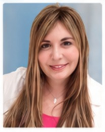

Board Certifications
- American Osteopathic Board of Family Physicians (AOBFP): Family Medicine, certified since 2013
- AOBFP: Osteopathic Manipulative Treatment
Elite Medicine and Aesthetic Institute is a medical facility that specializes in caring for people.

Dr. Winkelman is a board-certified osteopathic family physician and osteopathic manipulative medicine practitioner. A lifelong Floridian, she earned her B.S. from the University of Florida and her D.O. from Nova Southeastern University (NSU).
Her interest in aesthetic medicine, particularly skin health and anti-aging, comes from growing up with parents who were pioneers in dermatology and facial and body aesthetics. After losing both parents to cancer, she developed a focus on preventive medicine.
Compassionate and professional, with a strong eye for aesthetics, Dr. Winkelman combines family medicine, preventive medicine and aesthetics in one practice, so you can look and feel your best.
She teaches medical students, interns and residents, lectures at South Florida hospitals, residency programs and medical schools, and has published papers and book chapters. She is Vice President of the Broward County Osteopathic Medical Association (BCOMA), where she was formerly Treasurer, and has served on the Florida Osteopathic Medical Association (FOMA) Board of Trustees, where she focuses on patient safety and care.
Doctors of Osteopathic Medicine (D.O.s) are one of two types of physicians licensed to practice medicine without limitation in all 50 states, alongside M.D.s. D.O.s use modern medical tools, emphasize prevention and lifestyle, and consider how the nervous, muscular, skeletal and organ systems work together. Osteopathic manipulative treatment is also part of their care.
We diagnose and manage a wide range of conditions and coordinate care with medical sub-specialists. Our 3,100 square foot office is in a medical office building in West Boca Raton, Florida.
From injectables and laser treatments to skincare and body contouring, explore everything we offer.
Explore AestheticsNew patients are welcome. Book online or call our office.